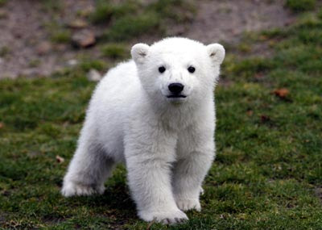

About Me

Ashley Hart is currently in customer service and operations for an e-commerce website. She works in conjunction with customers and brands to ensure daily operations and orders go smoothly. After working this field in a variety of settings, Ashley knows what drives a positive customer experience. In addition to this, she has enjoyed working as a Crossfit trainer for over 2 years.
Outside of work, Ashley enjoys trail running, climbing, crossfit, camping, and plain ol fun mountain adventures.
Ashley is making this website as part of a project for her career change into Web Development. Stay tuned for developments and exctiting changes along the way!